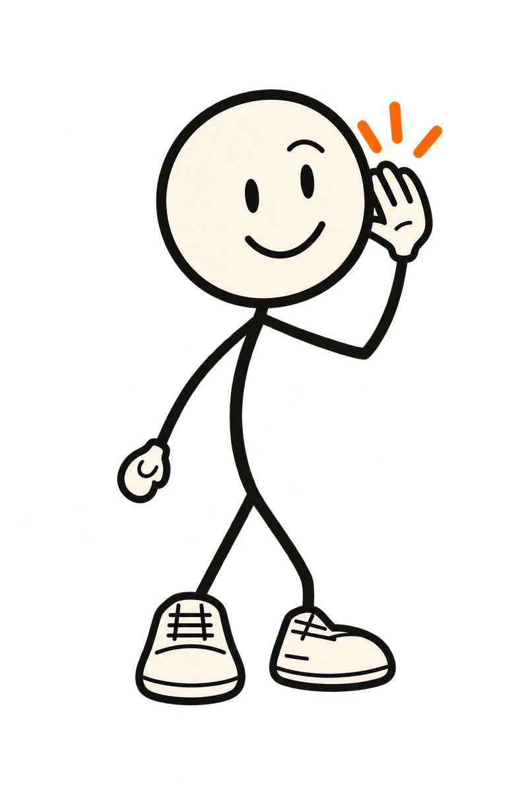

The same timeline the app uses (OpeningScene.frame(at:) in DoddyCore, ADR-207), redrawn in a browser so the cartoon can be looked at before a Mac build. A pen sketches Doddy in, he dribbles, crouches, hops and shoots, SWISH, and he pops up ready to talk while Home's buttons slide in. Tap the phone to skip; tap the buttons after. This is a design study: nothing here listens or talks.

Drawings: the four v1.3-r1 basketball poses, read as strokes so the pen can draw them; the ready pose is the app's listening artwork. In the app, the hello stays as Home's heading for eight seconds. The spoken greeting is the live agent's first message, heard only once a conversation really starts, and only if you tap Talk to Doddy or turned on "Start listening when I open Doddy".